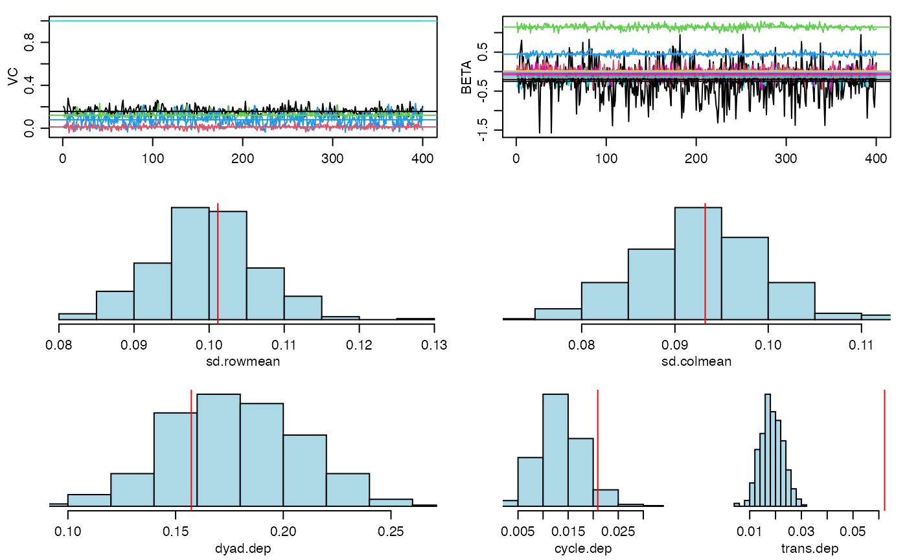

Modeling a binary network outcome
Peter Hoff
2018-05-30
Source:vignettes/binary_demo.Rmd
binary_demo.Rmdlibrary(amen)data(lazegalaw)
Y<-lazegalaw$Y[,,2]
Xd<-lazegalaw$Y[,,-2]
Xn<-lazegalaw$X[,c(1,2,4,5,6)]
dimnames(Xd)[[3]]## [1] "advice" "cowork"dimnames(Xn)[[2]]## [1] "status" "female" "seniority" "age" "practice"netplot(lazegalaw$Y[,,2],ncol=Xn[,3])
fitSRRM<-ame(Y, Xd=Xd, Xr=Xn, Xc=Xn, family="bin")
summary(fitSRRM) ##
## Regression coefficients:
## pmean psd z-stat p-val
## intercept 0.912 0.766 1.191 0.234
## status.row -0.188 0.195 -0.962 0.336
## female.row 0.006 0.172 0.036 0.971
## seniority.row -0.009 0.014 -0.675 0.500
## age.row -0.016 0.010 -1.581 0.114
## practice.row -0.224 0.130 -1.730 0.084
## status.col -0.189 0.175 -1.085 0.278
## female.col -0.023 0.153 -0.153 0.879
## seniority.col 0.011 0.012 0.873 0.383
## age.col -0.008 0.010 -0.811 0.418
## practice.col -0.284 0.122 -2.324 0.020
## advice.dyad -0.086 0.072 -1.196 0.232
## cowork.dyad 1.299 0.061 21.309 0.000
##
## Variance parameters:
## pmean psd
## va 0.238 0.048
## cab 0.011 0.032
## vb 0.201 0.043
## rho 0.113 0.052
## ve 1.000 0.000fitAME<-ame(Y, Xd=Xd, Xr=Xn, Xc=Xn, R=3, family="bin")
summary(fitAME) ##
## Regression coefficients:
## pmean psd z-stat p-val
## intercept 0.329 1.216 0.271 0.787
## status.row -0.087 0.319 -0.274 0.784
## female.row -0.155 0.251 -0.617 0.537
## seniority.row -0.007 0.019 -0.375 0.708
## age.row -0.026 0.016 -1.669 0.095
## practice.row -0.103 0.215 -0.480 0.631
## status.col -0.466 0.271 -1.717 0.086
## female.col -0.030 0.234 -0.127 0.899
## seniority.col -0.003 0.017 -0.192 0.848
## age.col -0.005 0.013 -0.415 0.678
## practice.col -0.029 0.193 -0.152 0.879
## advice.dyad -0.134 0.112 -1.195 0.232
## cowork.dyad 1.611 0.103 15.641 0.000
##
## Variance parameters:
## pmean psd
## va 0.491 0.114
## cab 0.035 0.068
## vb 0.331 0.079
## rho 0.179 0.091
## ve 1.000 0.000